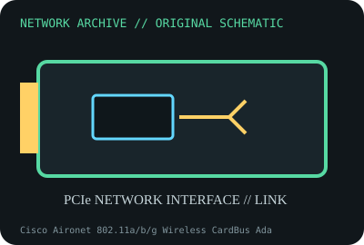

[ MODEL-SPECIFIC NETWORK HARDWARE ]
Cisco Aironet 802.11a/b/g Wireless CardBus Adapter AIR-CB21AG-A-K9
Tri-band-era legacy CardBus WLAN client adapter with external antenna diversity. Confirm exact product label and revision before applying specifications.

IDENTIFICATION: Confirm manufacturer PID, hardware revision, device ID or module suffix. Nominal standards/link rates are not measurements of payload performance.
Exact specifications and compatibility
| Dedicated subcategory | Legacy networking adapters |
|---|---|
| Exact product/model | Cisco Aironet 802.11a/b/g Wireless CardBus Adapter AIR-CB21AG-A-K9 |
| Bus, ports and physical interface | 32-bit CardBus Type II PC Card interface with integrated radio/antenna; RF implementation and regional suffix are board-specific. |
| PHY, radio or protocol | IEEE 802.11a/b/g client radio; 2.4GHz 802.11b/g and 5GHz 802.11a with regional channel restrictions. |
| Nominal rate (not measured) | Legacy PHY maxima are standard-specific (up to 54Mb/s 802.11a/g); not a real throughput measurement. |
| Measured throughput | No measured benchmark is claimed for a physical specimen. A valid result must record host/peer, link partner, media/cable, driver/firmware, traffic pattern, test tool and duration. |
| Drivers, OS and firmware | Cisco Aironet client utility/Windows driver packages are legacy and OS-specific; Linux support depends on card revision, chipset and distribution driver availability. |
| Compatibility | Requires CardBus (not 16-bit PCMCIA-only) host, region-compatible radio and matching Cisco client driver. Antenna/host design and regulatory domain matter. |
| Variant warning | AIR-CB21AG-A-K9 regional SKU differs from -E/-J and other radio cards. Verify regulatory suffix, label, card revision and chipset before driver selection. |
Model and revision notes
AIR-CB21AG-A-K9 regional SKU differs from -E/-J and other radio cards. Verify regulatory suffix, label, card revision and chipset before driver selection.
Cisco Aironet client utility/Windows driver packages are legacy and OS-specific; Linux support depends on card revision, chipset and distribution driver availability.
Requires CardBus (not 16-bit PCMCIA-only) host, region-compatible radio and matching Cisco client driver. Antenna/host design and regulatory domain matter.
Archival, ESD and preservation notes
Record regulatory SKU, MAC, serial, driver and antenna label; keep CardBus connector straight and store dry in antistatic sleeve.
Document source URL, access date, document revision and specimen label/condition. Preserve without credentials or private configuration.
Primary manufacturer and standards sources
- Cisco Aironet AIR-CB21AG adapter data sheetPrimary manufacturer or standards documentation; verify exact SKU and host revision.
- Cisco AIR-CB21AG model supportPrimary manufacturer or standards documentation; verify exact SKU and host revision.
- IEEE 802.11 working group standardsPrimary manufacturer or standards documentation; verify exact SKU and host revision.
Manufacturer statements cover the named part or its documented product family; the exact labeled revision and vendor compatibility list take precedence.